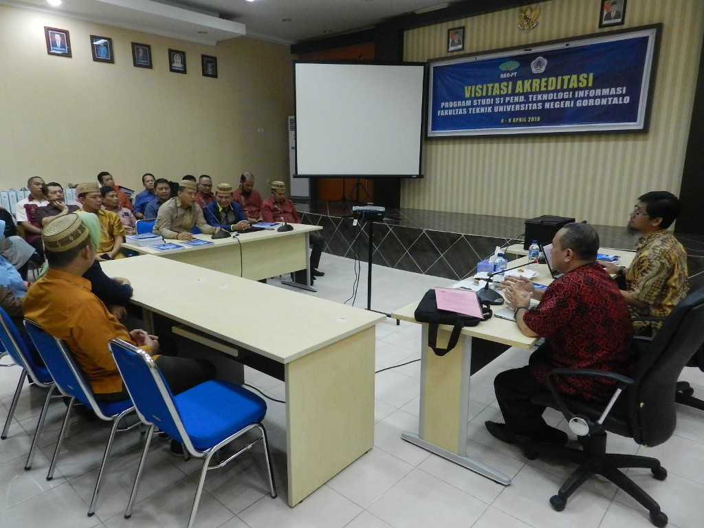

| "Profesionalitas Guru SMK Diharapkan Mampu Menghadapi Tantangan Teknologi" | |
|---|---|
|  | Indonesia saat ini masih kekurangan sekitar 159.000 guru vokasi di berbagai wilayah. Tidak hanya segi kualitas. Profesionalitas guru bidang vokasi juda dipandang masih kurang. Hal ini ditandai masih tingginya guru bidang vokasi belum memiliki sertifikat pendidik dan sertifikat kompetensi keahlian. Hal ini disampaikan Paristiyanti Nurwardani. Direktur pembelajaran,Direktorat Jenderal pembelajaran dan Kemahasiswaan (Ditjen Belwana) Kemenristekdikti dalam pembukaan "Seminar Nasional Inovati Pembelajaran Pendidikan Profesi Guru" (PPG) Bidang Vokasi" diSerpong Tanggerang Selatan (10/09/2019) |